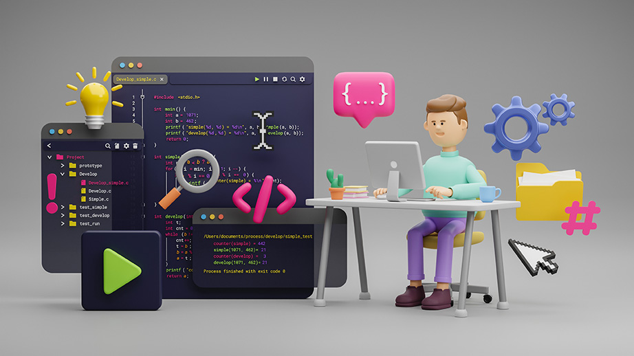

Role para baixo
Java na prática: da lógica ao código
Com os conceitos de algoritmos e suas representações bem compreendidos, chegou o momento de transformar essa lógica em código. Vamos conhecer agora a linguagem Java, uma das mais utilizadas no mercado de desenvolvimento.
Depois de entender como estruturar um algoritmo, surge uma nova pergunta: como fazer o computador realmente executar essa lógica?
Para isso, entramos no universo das linguagens de programação. Elas são, basicamente, uma ponte que permite que humanos se comuniquem com as máquinas. Nesse universo, o Java é uma das linguagens mais utilizadas no mundo.
Clique em play e confira uma videoaula sobre a introdução à linguagem de programação Java.
Agora que você viu o conteúdo sendo aplicado na prática, vamos retomar os pontos principais e explorar mais detalhadamente como essas ideias se transformam em soluções dentro do código.
Java está em diversos contextos do nosso dia a dia: de caixas eletrônicos a aplicativos e máquinas industriais. Sua força está na capacidade de rodar em diferentes dispositivos graças à JVM (Java Virtual Machine).
Sabe aquele caixa eletrônico que você usa? O painel de uma máquina industrial? Ou o aplicativo de seu celular? Todos eles podem ter, lá dentro, códigos escritos em Java. Isso é possível porque o Java funciona sobre uma tecnologia chamada JVM — Java Virtual Machine, que permite que um mesmo programa seja executado em qualquer tipo de equipamento, desde que essa máquina tenha a JVM instalada.
Funciona assim:
- Você escreve o código usando a linguagem Java.
- Esse código é processado pelo compilador e transformado em uma linguagem intermediária chamada bytecode.
- A JVM interpreta esse bytecode e executa o programa, seja em seu computador, em um servidor na nuvem, em um smartphone ou até em sistemas embarcados em máquinas e equipamentos.
Compreendendo como a JVM executa seu código, o próximo passo é preparar o ambiente de desenvolvimento — o local em que você escreverá e testará seus programas.

Antes de escrever e executar seus primeiros códigos, é essencial configurar corretamente o ambiente de desenvolvimento. Vamos ver como fazer isso.
Clique em play e acompanhe uma videoaula prática sobre a configuração do ambiente de desenvolvimento.
Ao acompanhar o vídeo, você pôde ver como é simples configurar o ambiente necessário para programar em Java e dar os primeiros passos com a linguagem. A familiaridade com esse ambiente torna o aprendizado mais fluido e o aproxima da realidade do mercado, em que o Java é utilizado em diferentes contextos.
O Java é amplamente usado por sua estabilidade e sua segurança, sendo ideal para bancos, indústrias e aplicações em nuvem ou internet das coisas (da sigla em inglês IoT).
Ao entender como o Java funciona, você começa a ver que a programação vai muito além dos códigos. É sobre criar soluções que podem funcionar em qualquer lugar, desde uma fábrica até um aplicativo em seu bolso.

É hora de testar seus conhecimentos!!
Praticando
Chegou o momento de praticar o que você aprendeu até aqui. Vamos lá!
1.Durante a fabricação de componentes eletrônicos, um operador precisa informar ao sistema o número de peças produzidas. Qual das alternativas utiliza corretamente o comando em Java para capturar esse dado do teclado?
Muito bem! Você
selecionou a alternativa correta.
A forma correta de capturar um número inteiro digitado pelo usuário é utilizando nextInt().
Tente outra vez!
Resposta incorreta.
Resposta
incorreta.
Esta não é a alternativa correta. Se precisar volte ao conteúdo e tente novamente.
Com esse exercício, você consolidou mais um passo de sua jornada como programador(a). Vamos seguir com novos desafios e conteúdos!